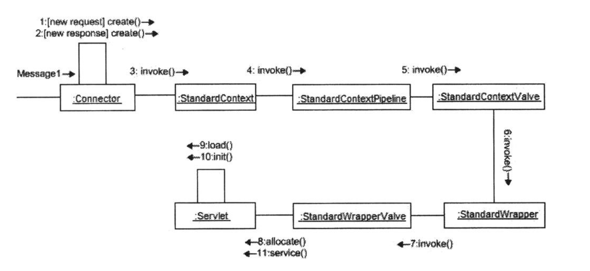

Chapter 11 explains in detail the org.apache.catalina.core.StandardWrapper class that represents a servlet in a web application. In particular, this chapter explains how filters and a servlet’s service method are invoked. The application accompanying this chapter uses StandardWrapper instances to represents servlets.
本章主要介绍 Tomcat 的默认 Wrapper 实现，已经相关的接口 SingleThreadModel
Sequence of Methods Invocation
当 connector 收到一个 HTTP request 之后，调用链如下

主要步骤：
- connector 创建 request/response 实例
- connector 调用 StandardContext 的 invoke 方法
- StandardContext 调用 StandardContextValve 的 invoke 方法
- StandardContextValve 找到对应的 wrapper 并调用其 invoke 方法
- wrapper 调用对应的 StandardWrapperValve 的 invoke 方法
- StandardWrapperValve 调用 wrapper 的 allocate() 方法加载 servlet 实例
- allocate 调用 load 方法加载 servlet
- load 方法调用 servlet 的 init 方法
- StandardWrapperValve 调用 servlet 的 service 方法
SingleThreadModel
servlet 可以选择实现 javax.servlet.SingleThreadMode 接口，实现了该接口的 class 称为 SingleThreadModel (STM) servlet。
Servlet 2.4 specification 中关于这个借口的描述如下:
If a servlet implements this interface, you are guaranteed that no two threads will execute concurrently in a servlet’s service method. The servlet container can guarantee this by synchronizing access to a single instance of the servlet,
or by maintaining a pool of servlet instances and dispatching each new request to a free servlet. This interface does not prevent synchronization problems that result from servlets accessing shared resources such as static class variables or classes outside the scope of the servlet.
实现这个接口可以保证再一个时间点上，只有一个 servlet 被处理。实现方式可能是 synchronized 或者 pool，但这并不意味着保证线程安全。比如一些静态变量，或者共享资源的调用还是有可能会长生多线程问题的。
It is true that by implementing SingleThreadModel no two threads will execute a servlet’s service method at the same time. However, to enhance performance the servlet container can create multiple instances of an STM servlet. That means, the STM servlet’s service method can be executed concurrently in different instances. This will introduce synchronization problems if the servlet need to access static class variables or other resources outside the class.
StandardWrapper
StandardWrapper 的职责是加载对应的 servlet 并创建实例，调用 servlet 的 service 方法并不在它的职责范围内，是由 StandardWrapperValve 完成的。具体的调用点是在 ApplicationFilterChain 类中。
加载在 StandardWrapper#loadServlet 中完成，过程的后段会置位 singleThreadModel flag
1 | // Register our newly initialized instance |
StandardWrapper#allocate 实现如下, 主要逻辑如下
- 加载目标 servlet
- 置位 singleThreadModel flag
- 根据 flag 选择对应的维护 servlet 的形式，单例模式/Pool
1 | public Servlet allocate() throws ServletException { |
StandardWrapperValve
StandardWrapperValve 是 StandardWrapper 的默认的 valve 实现，这个设置在 StandardWrapper 的构造函数中
1 | public StandardWrapper() { |
主要干两件事
- 执行 servlet 相关的所有 filters
- 调用 sender 的 service 方法
在这个 valve 的 invoke 中具体做了如下事情
- 调用 StandardWrapper 的 allocate 方法，拿到 servlet 的实例
- 调用 createFilterChain 创建 filter chain
- 调用 chain 的 doFilter 方法，过程中会调用 servlet 的 service 方法
- 释放 filter chain
- 调用 wrapper 的 deallocate 方法
- 如果 servlet 永远不可用了，调用 wrapper 的 unload 方法
FilterDef
org.apache.catalina.deploy.FilterDef 表示配置文件中的 filter 定义，他的每一个 property 都代表文件中该元素的一个可配置项。
1 | public final class FilterDef { |
ApplicationFilterConfig
org.apache.catalina.core.ApplicationFilterConfig 实现了 javax.servlet.FilterConfig 接口，管理 web application 启动时创建的 filter 实例。构造函数如下
1 | public ApplicationFilterConfig(Context context, FilterDef filterDef) |
context 代表 web application, FilterDef 代表 filter 的定义。他有一个 getFilter() 方法可以返回 javax.servlet.Filter 对象实例
1 | Filter getFilter() throws ClassCastException, ClassNotFoundException, |
ApplicationFilterChain
org.apache.catalina.core.ApplicationFilterChain class 实现了 javax.servlet.FilterChain 接口，StandardWrapperValve 创建这个 chain 的实例并调用 doFilter 方法，doFilter 签名如下
1 | void doFilter(ServletRequest req, ServletResponse resp, FilterChain chain) throws IOException, ServletException; |
原理和 Valve 一致也用了 责任链 模式，下面是一个实现的例子
1 | public void doFilter(ServletRequest request, ServletResponse response, |
The Application
和之前的章节基本一致，最大的区别是在 Bootstrap 中使用了默认的 StandardWrapper 作为 wrapper 的实现
1 | Wrapper wrapper1 = new StandardWrapper(); |
Issue
setup 项目之后，访问 URL，抛异常
1 | StandardWrapperValve[Primitive]: Allocate exception for servlet Primitive |
可以将 StandardWrapper 的 loadServlet() 中 SystemLogHandler 相关的方法注释掉即可。这个应该是 log 相关的操作，功能上没什么影响
1 | // ... |
思考
最后 Chain 相关的章节，在返回 chain 实例的时候用的是 servlet 包下 filter 的实例，这部分配合的部分可以深入探究一下
Filter Vs Valve: 在 tomcat 中效果是一样的，但是 Filter 更像是一个行业标准，Jetty 中也可以用，Valve 更像是一个 Tomcat 实现，其他框架中是没有的。